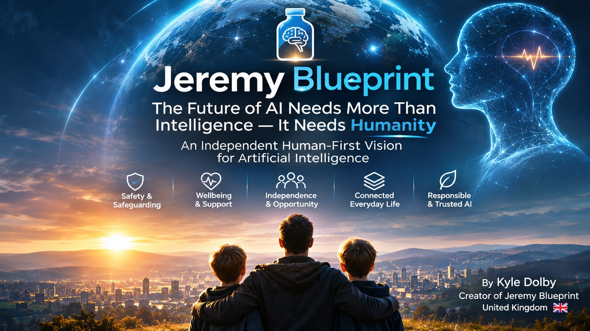

01 / PROTECTION
Safety & safeguarding
Exploring emergency pathways, supportive alerts and future wearable-enabled safeguards for children and vulnerable people.
Intelligence is advancing. Humanity must remain at its centre. Discover Jeremy Blueprint — an independent vision for a connected AI life companion ecosystem designed around safeguarding, wellbeing, accessibility and human independence.
Concept and vision by Kyle Dolby · United Kingdom
Original development documented from early 2025.
Jeremy in a Bottle began with a simple ambition: “Helping dreams become reality.”
Jeremy Blueprint explores how a personal AI companion could help people navigate decisions, build healthier routines, learn, access support and pursue meaningful goals — while encouraging real-world relationships and preserving human judgement.
A public overview of proposed capabilities. These are conceptual design directions, not claims that working products are available or validated.
Exploring emergency pathways, supportive alerts and future wearable-enabled safeguards for children and vulnerable people.
Support for reminders, routines, goals and personal information, with meaningful user choice and control.
Reflective check-ins, motivation and wellbeing support that complements professional care and real-world connection.
Tools to explore careers, develop skills, consider financial decisions and build informed plans.
Reducing barriers to services, strengthening inclusion and supporting participation in everyday life.
Clear expectations for privacy, consent, understandable system behaviour and accountability.
Longer-term possibilities include connected devices, wearables, transport and robotics. These remain conceptual ambitions.
An evolving concept developed through iterative exploration and design work, with early development documented from 2025 and building on earlier thinking.
An AI-assisted companion focused on daily support, habits, goals and practical encouragement.
“Helping dreams become reality.” A personal guide for life's decisions, difficult moments and opportunities.
A human-first ecosystem bringing together personal assistance, safeguarding, accessibility and responsible AI design.
Better AI should help people become more capable, not more dependent. Human choice, accessibility, safeguarding and meaningful oversight belong at the foundation.
Public writing on the opportunities and responsibilities of human-first artificial intelligence.

An independent human-first vision exploring the future of artificial intelligence, safeguarding, wellbeing, accountability and human independence.
AI psychology, conversational influence, transparency and meaningful accountability.
Explore Kyle's writing on LinkedIn ↗A public conversation about the direction of AI and the importance of human-centred design.
Read at AI Governance Desk ↗Jeremy Blueprint is the independent vision of Kyle Dolby, developed through iterative exploration of how emerging technology could better serve human needs.
Kyle writes about AI companions, emotional influence, safeguarding, transparency and digital accountability. This website shares a public concept rather than confidential technical materials or unverified intellectual-property allegations.
Creator of Jeremy Blueprint · United Kingdom
Mission: make human benefit the benchmark for the next generation of intelligent technology.
Interested in discussing human-first AI, safeguarding, accessibility or responsible companion design? Connect with the creator of Jeremy Blueprint.